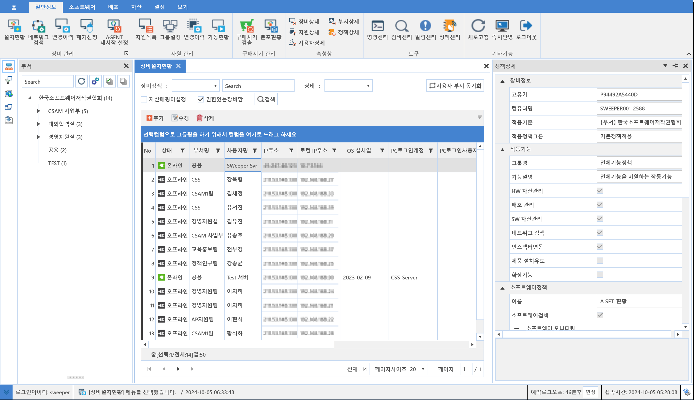
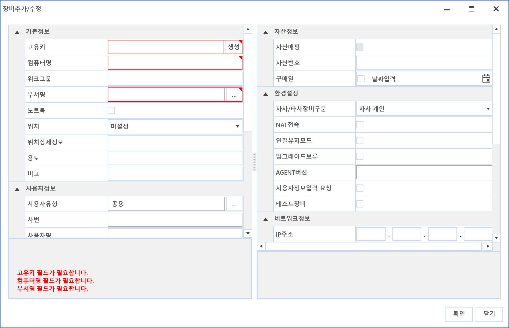
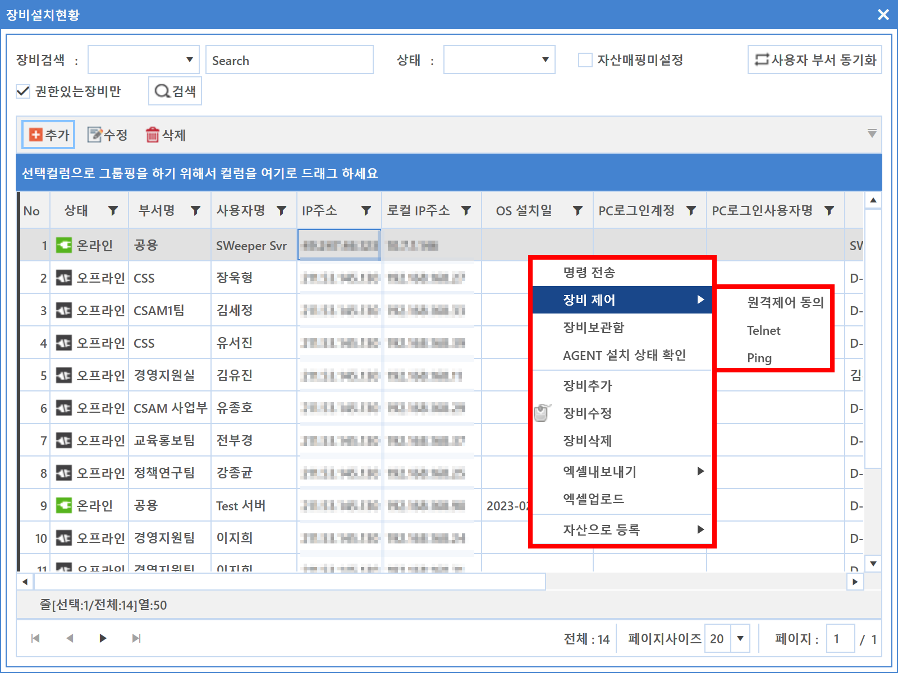

4-1-1. 설치현황
4-1-1. 설치현황
Source: https://www.sweeper.or.kr/etc/manual/411.html
4-1-1. 설치현황


에이전트 설치현황 확인이 가능하며, 온/오프라인 정보를 실시간으로 확인할 수 있습니다. 또한 OS정보, 네트워크 정보, 제품정보등 다양한 PC환경에 대한 정보 확인이 가능합니다.

화면 구성은 아래 그림과 같이 조직도, 메인화면, 속성창 조합으로 기본표시되며, 특히 속성창을 활용하여 효과적으로 관리할 수 있습니다.

주요기능
- 장비 추가
에이전트 설치가 불가능한 장비를 등록하기 위한 기능입니다.
- 마우스 우클릭 장비추가

-
정보입력
 -
적색으로 표시된 부분을 필수 입력사항 입니다.
-
고유키는 기존에 있는 고유키 정보와 중복되지 않아야 합니다.
-
장비 수정
-
입력된 장비 정보를 수정할 수 있습니다.
-
장비 삭제
-
입력한 장비정보를 삭제할 수 있습니다.
-
장비보관함
장비 보관함으로 이동한 장비는 [도구-장비보관함]에서 확인할 수 있습니다.
-
명령 활용
-
설치현황은 SWeeper의 가장 기본 기능을 수행할 수 있는 메뉴이며, 명령 기능을 효과적으로 사용할 수 있도록 합니다.
- 장비 선택 후 마우스 우클릭을 하면 다양한 명령을 수행할 수 있습니다.
- 명령 대상 장비가 불규칙하에 분포되어 검색이 어려울 경우 장비보관함에 임시저장하여 명령을 수행하면 좀 더 효과적으로 운영할 수 있습니다.

-
명령관련 자세한 사항은 명령(3-1-1. 명령센터) 편을 참고하여 주시기 바랍니다.
-
속성창 활용
-
속성창은 장비의 추가정보를 보여줄 수 있으며, 관리 효율을 높여줄 수 있는 기능입니다.
-
아래 속성창을 사용하시면 좋습니다.
- 자원상세
- 정책상세
- SW설치목록 (SWDB)
- SW설치목록 (제어판)
- SW설치목록 (+DB)
참고사항
-
사용자 부서 동기화
-
기업내의 인사 변동으로 인하여, 사용자의 부서가 변경된 경우, 해당 사용자의 장비도 사용자의 부서와 일치시키고자 할 때 사용합니다.
- 아래 그림과 같이, 인사 변동이 존재할 경우 해당 장비가 나타납니다.

- 사용자부서 동기화 창에서 우클릭 '선택한 데이터 동기화' 를 클릭하면 선택한 장비만 동기화 할 수 있습니다.

- 장비 설치현황 또한 파일 업로드를 제공하며, 방법은 5-1-1. 라이선스와 동일합니다.

- 우클릭 엑셀 내보내기시, 해당 PC에 다운받으려는 엑셀 버전이 설치되어 있어야 합니다.
업로드시에는 다운받은 엑셀파일을 임의로 변경하면, 업로드시 실패할 수 있습니다. 정확한 데이터만 입력해 주시기 바랍니다.
다운받은 엑셀파일에서 진한 회색이 된 곳은 필수 입력 컬럼이며, 붉은 표시된 곳은 업로드 가능한 컬럼입니다.
주의사항
내려받은 엑셀샘플 양식의 서식이 변경되면, 업로드시 문제가 될 수 있습니다.
다른 파일에서 Copy & Paste 시, 의도치 않게 서식이 변경되어 오류가 발생됨을 주의하시기 바랍니다.

© Copyright SWeeper Inc.. All Rights Reserved